.
MODYFIKACJE
|
Posiadam dwie kamerki ATIK Titan, mono oraz kolor i choć same w sobie są urządzeniami bardzo przemyślanymi konstrukcyjnie to zawsze znajdzie się coś co można poprawić. Tu prezentuję opisy przeróbek których dokonałem. PROBLEM Z WIBRACJĄ WENTYLATORKÓW . Ogniwo peltiera zamontowane w kamerkach, do odprowadzenia ciepła ze swojej gorącej strony, używa wentylatorków SUNON Maglev KDE1204PFV2 DC12V. Posiadają one wirniczki/wiatraczki zawieszone na poduszce magnetycznej, dla zminimalizowania drgań, jednak posiadam 6 szt. tego modelu i każdy z nich (od nowości co do sztuki) wibruje niczym pewne urządzenie o innym zastosowaniu :] Przyczyna? Źle wyważone wiatraczki. Rozwiązanie? Przyklejenie do ich łopatek (wytypowanych w procesie wyważania) kawałka taśmy pcv. Efekt? Bardzo wyraźnie wyczuwalne zmniejszenie drgań wiatraczków. Nie jakieś tam wydaje mi się, że nie dyga tak mocno, one naprawdę po takiej operacji chodzą duuużo gładziej. Nadto, postanowiłem iść dalej i nie przykręcać ich sztywno w obudowie, jak to miało miejsce pierwotnie, lecz zrobiłem z paska gumy dętkowej pierścień i na nim umocowałem wentylatorki. Coś co się kręci, zawsze będzie generować jakieś drgania, a teraz wytracają się one dodatkowo na gumie, nie docierając bezpośrednio do obudowy kamerki. 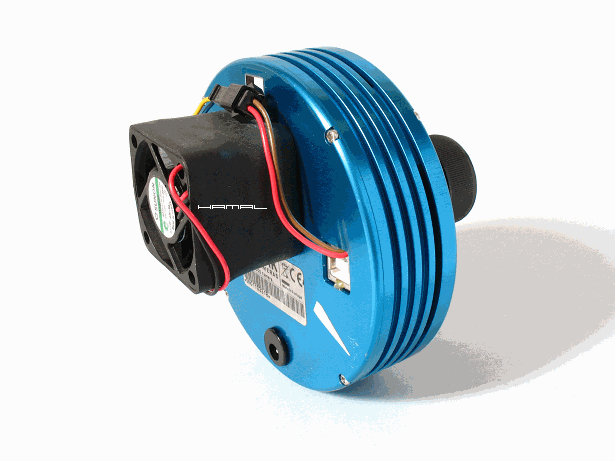 NIEDOBÓR GWINTU FILTROWEGO W NOSKU . Okienko zamykające komorę matrycy jest dokręcane do uszczelki specjalnym pierścieniem, co sprawia że nie pozostaje już nam nic gwintu, aby ewentualnie na szybko przykręcić przed matrycą jakiś filtr. Problem rozwiązałem w taki sposób, że szybkę okienka bardzo ostrożnie oszlifowałem do rozmiaru który umożliwił jej osadzenie na klej w pierścieniu dociskowym. Należało zebrać ok 3-4mm pierścień dookoła. Z uwagi na delikatność szkła, oraz powłok, szlifowanie każdej szybki (mam dwie kamerki) trwało ok 2-3 h. Efekt na zdjęciu poniżej. Nad pierścieniem pozostaje wolny gwint filtrowy umożliwiający dokręceniu tu dowolnego filtra w oprawie. 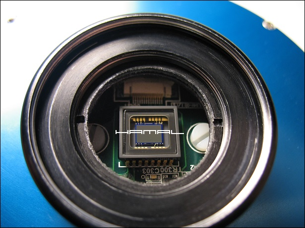 WYMIANA PASTY TERMOPRZEWODZĄCEJ . Po zdjęciu tylnej pokrywy obudowy kamerki uzyskujemy dostęp do trzech śrub trzymających tuleję komory matrycy, po ich odkręceniu można zdjąć pierścień uzyskując pełny dostęp do płytki matrycy. 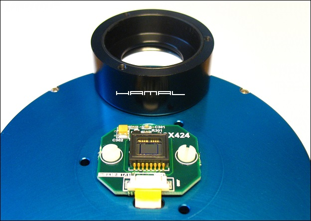 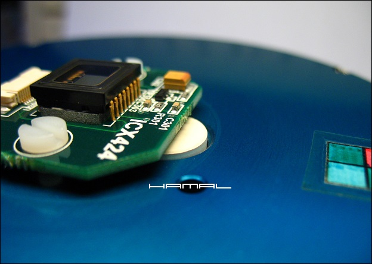 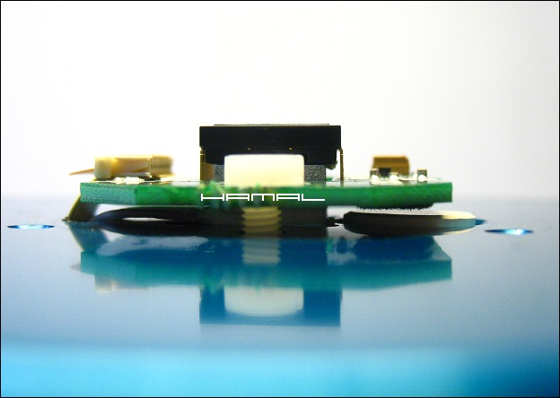 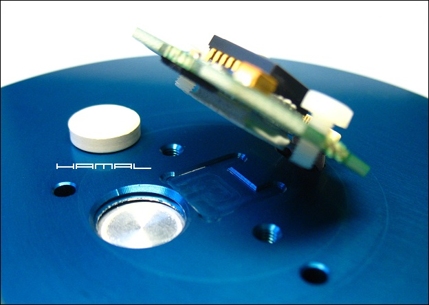 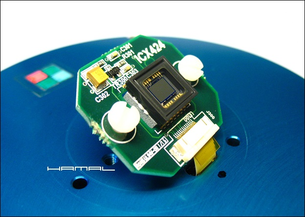 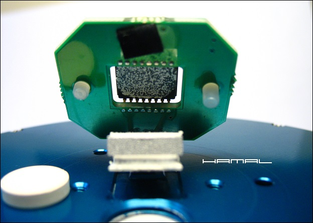 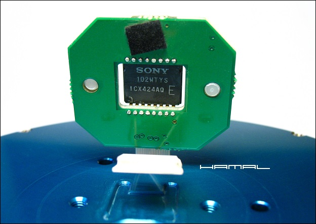 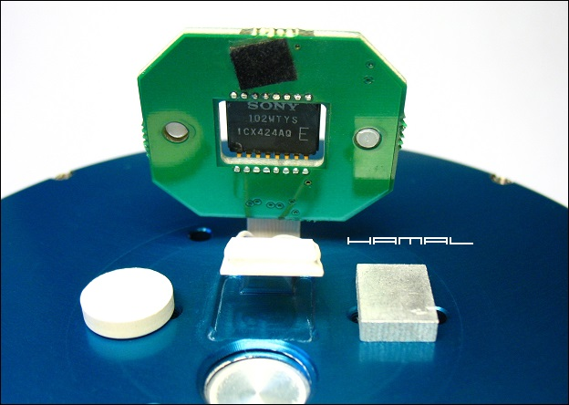 Po rozebraniu całości starą pastę usunąłem patyczkami kosmetycznymi nasączonymi w benzynie ekstrakcyjnej. Potem już tylko nowa pasta i można składać :) KOREKTA PROSTOPADŁOŚCI MATRYCY . Wymiana pasty termoprzewodzącej została przeprowadzona jedynie przy okazji stwierdzenia konieczności korekty prostopadłości matrycy względem głównego pierścienia jej komory. Mimo małych rozmiarów matrycy, gwiazdy od dawna ujawniały problem który niezależnie od orientacji kamery zawsze występował w tym samym miejscu. Problem nastręczało znalezienie metody pozwalającej na stwierdzenie osiowości układu. Doszedłem do wniosku, że konieczny efekt uzyskam w bardzo prosty sposób, przedstawiony na zdjęciu poniżej :) Wiadomo, że dla dużych matryc oczekiwaną dokładność uzyskamy jedynie przeznaczonymi do tego celu programami, jednak w tym przypadku, uzyskana dokładność jest wystarczająca. Dokładny opis powyższej metody znajdziecie TUTAJ. Widoczne pionowe odchylenie płytki matrycy. 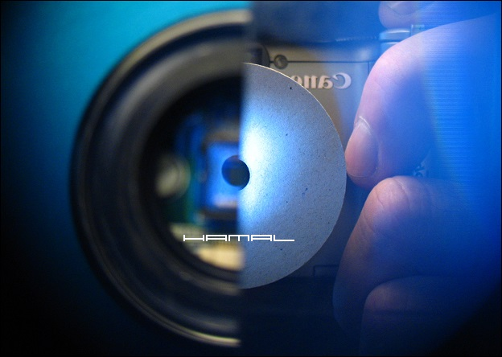 
|